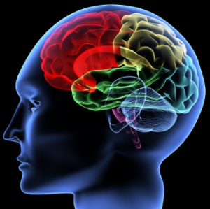
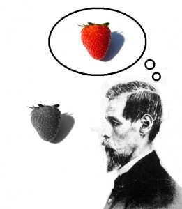

İnsan Beynine Dair İç Burkan Detaylar
-Sen ne üzerine çalışıyordun abi?
-Hocam ben insan beyni üzerine çalışıyorum
-Ooo, süper…acayip ilginç şeyler öğreniyorsundur anlatsana biraz bize
-Abi neyi anlatayım, valla okudukça daha çok ne kadar az şey bildiğimizi anlıyorum
-Yeme bizi şimdi, sen biliyorsundur bir sürü şey de bize anlatmıyorsun…
Ve türevi binbir türlü muhabbete maruz kalmaktan yorulup, söyle bir eytere beae silkinme hareketi ile bu yazıda biraz insan beyninden, senin, benim beynimizden bahsedeyim istedim prenses. Ama başlıktan ve genel olarak çevremdeki insanlara söylediğim (ve haklı olduğum) şeylerden yola çıkarak daha çok insan beynini anlaması neden bu kadar zor üzerine yoğunlaşıcam, yani din merkezi şurada, duygu merkezi burada, aşık olunca şurası aktive oluyor gibi popüler bilimde ve basında sıkça yer bulan şeyler bekleme benden. Hatta bu yazıda seni o popüler bilime ve basına yansıyan çoğu buluşun, sanki beyni ha anladık ha anlıycaz havasının ne kadar asılsız olduğuna ikna edicem inşallah. Başlayalım.
Efendim, Sofi’nin Dünyasından hatırlarsınız “İnsan beyni bizim anlayabilceğimiz kadar basit olsaydı, onu anlayamayacak kadar aptal olmamız gerekirdi.” Harbiden de insan beyni üzerine düşünüp araştırdıkça anladığım, len o kadar da aptal değilmişiz bea, bu alet harbi çok karmaşık. Neden karmaşık? Şimdi ilk öğrediğimde günlerce karalar bağlamama yol açan en temel taşından başlayalım. Malumunuz beyin nöron denen elektiriğe tepki veren hücrelerden oluşuyor. Bu abilerden insan beyninde yaklasik olarak 100 milyar tane var. Sayı biraz ürkünç ama nöron kısmı yine kolay, bu abiyi oldukça iyi anlamış durumdayız, sodyum potasyum pompası ile nasıl elektrik iletir, axonu, dendtriti şusu busu çözdük olum seni trilyon gelsen kaç yazar. Ama nöronların bize kroşeyi çaktığı yer bağlantıları: bir nöronun ne yaptığından çok bize lazım olan
bağlantılar arasındaki ilişkiler ve onların davranışımıza olan etkisi. Ve her bir nöron yaklasik olarak 1000 tane başka nöronla bağlantı yapıyor, yani kaba bir hesapla 100 trilyon bağlantı var beyinde. Bu 100 trilyon boru değil prenses, bir düşün. Hadi bak ben yardımcı olayım sana bu sayı evrendeki tüm yıldızların tahmini sayısından bile fazla. Bir gece şehirden söyle bir uzaklas ve gökyüzüne bak prenses, milyonlarca yıldız tepende seni bir ezsin kendini bir karınca gibi hisset, sonra bir de üzerine olum senin beyninde bundan çok bağlantı var naber desinler. Bırakıyorum ülen feylesofluğu, tutmayın beni çoban olucam 🙂
100 trilyon bağlantının neyi nası yaptığını anlamak mümkün değil tabi, o halde bölerek kademe kademe anlayalım. Son yirmi yılda bu şekilde beynin belli bölümlerine fokus olup bir sürü ilginç sonuca ulaşıldı, kaba hatları ile beynin hangi bölümlerinin nelerle ilişkilendiği az çok biliniyor. Misal gözünle bir şey gördüğün zaman bu bilgi önce nereye gidiyor, ordan nereye geçiyor, beynin hangi bölümleri görme ile ilgili bilgileri işliyor, bu bilgiler sonra nereye dağılıyor kaba hatları ile biliniyor. Diğer duyu organları, motor sistem vs. bir çok ana taşlar yerine oturmuş durumda. Hal böyle olunca kademeli olarak yukarıya, insan davranışına doğru çıkılmaya çalışılıyor şu aralar. Tabi nöronların seviyesi ile insan davranışı arasında çıkılması gereken birden çok katman var, söyle ki:

Degisik olceklerde beyin aratirma katmanlari. Molekuler duzeyde baslayan olcumler, sinapslara, noronlara, oradan noronlarin bir birleri ile olsuturdugu networklere, bir birleri ile iliskili netwroklerin olusturdu haritalara, belli foksiyonlara odakli sistemlere ve oradan en seviyede sinir sisteminin tamamina ulasip oradan insan davranisina baglaniyoruz.
Lakin insan davranışına ilişkin kısımlara gelindiğinde bir bocalama yaşıyoruz. Neden dersen, bu nöron dediğin hücreler delikanlı değiller abi, tek tek gelmedikleri gibi, grup grup da gelmiyorlar. En basitinden bir masaya uzanıp bardağı eline almak gibi bir davranış bile utanmasa bütün beyni aktive edicek. Burda ikinci temel probleme geliyoruz ölçüm metotları. Şimdi her bilim dalında malum gözlem, ölçüm, deney gibi elini taşın altına koyduğun ve belli hipotezleri deneyler yolu ile test ettiğin önemli bir prosedür var. Beyin içinde zilyon farklı disiplinin zilyon farklı yöntemi var tabi ki ve bir ton sonuç elde edildide. Lakin beyinde diğer bilim dallarında pek bu ölçekte yaşamadığın bir problem var: iki ölçülebilir şey arasındaki derin uçurum. Nedir bu iki ölçülebilir şey? Birincisi senin davranışın, bardağa uzandığını görüyoruz, bununla ilgili bir ton ölçüm de yapabiliriz. İkincisi, senin bardağa uzanmaya karar verdiğin andan uzanış ve bardağı kavrayış süren boyunca nöronlarının aktivasyonunu da ölçebiliriz (tek bir hücreden veya bir grup hücreden ölçüm alabileceğimiz gibi PET, fonksiyonel MRİ gibi yöntemlerle de daha genel nöron aktivasyonlarını kaydedebiliriz) Varsayalım ki nöronların ne yaptığını biliyoruz, senin ne yaptığını da biliyoruz, peki milyonlarca nöronun ne yaptığını senin ne yaptığına nasıl bağlıycaz? İkisinin arasındaki neden-sonuç ilişkileri ile doldurulması gereken uçurum muazzam büyüklükte.
Beynin Bolumleri
Yani neyin nasıl olduğuna dair söyle bir hikayeden biraz daha detaylısını yazmak çok zor: Abi şimdi sen bardağa uzanmaya karar verdiğinde Medial Prefrontal Kortex’de bir grup nöronun kafası attı ve ateşlemeye başladılar, bu abilerin çevresi geniş Motor Cortex’de Duyusal Kortex’de bir sürü tanıdıkları var tamam mı, onların da kafa atmasın mi, orda ok yaydan çıktı bir kere abijim o bardağa uzanılacak o kadar, Cerebellum de arka çıkıp ben bu hareketin koordinasyonunu sağlarım demesin mı (çok anarşisttir kendisi ortalığı karıştırıcak illa), Duyusal kortex bardaktan gelen bilgileri Cerebellum’a geçiyor, Cerebellum bu bilgileri proprioceptive sistemden gelen kolunun ve vücudunun şu an nerede olduğu bilgileriyle kıyaslayarak Motor Kortex’e geçiyor, o da kas komutlarına çevirip Basal Ganglia’ya fakslıyor, Basal Ganglia’ da bu komutlara göre inhibe edilmesi gereken kaslara karar verip onları inhibe eden diğerlerini de harekete geçiren komutları omurilikdeki sinirler vasıtası ile kaslara geçiyor. Tabi bu bahsettiğim bölgelerdeki milyonlarca nöronun trilyonlarca bağlantısından ve kat trilyonlarca ateşlemesinden nasıl bu kadar koordineli bir iş çıktığı hakkında kimsenin bir fikri yok. Ve bu daha bardağa uzanmak gibi basit bir davranış için, aşk meşk, duygular, bilinç, bellek, öğrenme, soyut düşünce, dil gibi çok daha karmaşık fonksiyonlarda işlerin ne kadar komplikeleştiğini tahmin edersiniz her halde. Velhasıl, din merkezi, aşk merkezi, zeka merkezi hedo hodo merkezi gibi şeyler külliyen yalan, beyin bütünsel çalışan bir yapı, en basit davranışta bile neredeyse bütün beyin müdahil oluyor, bütün alanların bir birine etkisi var ve insan davranışı dediğin bütün bu etkileşimlerin sonucu olarak ortaya çıkıyor.Misal bak kortex (beynin üst tabakası) anladığımız kadarıyla söyle bir ilişkiler yumağı:
Felleman ve vanEssen Diagrami
Daha da kötüsü, benim yukarıda anlattığım kaba hikayedeki lineer neden-sonuç ilişkilerinden de bahsedemeyiz, çünkü beyin non-lineer dinamik paralel işlemcili bir sistem. Non-lineer yani aynı girdilere farklı zamanlarda farklı çıktılar verebiliyor. Dinamik yani her hangi bir nöronun veya bir grup nöronun veya nöronlar arası ilişkilerin her hangi bir anda bulunduğu durum, bir sonra ki durumlarını belirlemede en az o an elde olan impulslar kadar etkin. Paralel işlemcili yani bütün prosesler eş zamanlı olarak bir birine paralel şekilde yürüyor. Hazır beynin durumlarından bahsetmişken, bütün bu hengameye bir de psikolojik rahatsızlıklarda adını sıkça duyduğumuz nörotransmitterleri ekleyelim. Noradrenalin, serotonin, dopamin vesaire gibi beynin belirli bölgelerinden beynin ya belli bir bölgesine ya da tamamına salıverilen bu nörotransmitterler trilyonlarca sinapsta (nöronların birbirleri ile yaptıkları bağlantı noktalarında) nöronlar arası elektirik alışverişini etkiliyor. Yani beyin kendi genel durumunu ani şekilde değiştirebiliyor. Kimisi etkileşimi aktive ediyor, kimisi inhibe ediyor. Sakin sakin takılmakta olan beyin abimiz, locus coeruleus’dan salınan noradrenilini yedi mi bir anda aktive oluyor o gazla bir ton hormonu damarlara basıyor sonra artan kalp ritmi mi dersin, genişleyen damarlar mı dersin, hızlı nefes alıp verme dersin uyarılmış refleksler mi dersin vücutta bir ton tepki yaratıyor. Abi savaşmaya ya da kaçmaya hazırlanıyor kendince, olum biraz uygar ol önce bi konuşmayı dene. Ya da güzel bir şey yaptığını düşündüğünde veriyor serotoni kendine aferim len ehe mahiyetinde kafası bi güzel cila oluyor, deli midir nedir.
Detaylarına girmiycem ama bunların üzerine bir de elimizdeki fMRI, PET, hücrelerden kayıt gibi ölçüm metotlarının ne kadar sınırlı olduğunu ekleyin. Tabi bir de çoğu deneyi insanlar üzerinde yapamadığımızı, maymunların, farelerin veya diğer üzerinde deney yapılan hayvanların nedense bizimle konuşmadığını ne dediğimizi anlamadığını ekleyin. Beyni anlama mücadelesi hemen hemen bütün bilim dallarının, dünyadaki en zeki beyinlerinlerin katılımına rağmen halen batan karda aşırı soğukta yüksek irtifada bir dağa tırmanmaya benziyor ve bütün bu çabalara rağmen çoook yavaş ilerliyoruz.
Bir de bütün bu sorunlar yetmezmiş gibi derin bir probleme de felsefeci abiler işaret ettiler sağolsunlar. Literatürde qualia veya bilincin zor problemi (the hard problem of consciousness) diye geçse de bendeniz bu qualia muhabbetlerine gıcık olan bir insan olarak problemi qualia adını anmadan ifade etmeyi tercih ediyorum. Şimdi prenses kardeşim, önündeki bilgisayar ekranına baktığın zaman gördüğün bildiğin şeylerin dışında bir de bu görüntünün sana hissettirdiği bir şeyler var di mi? Şimdi varsayalım biz bu beyin denen deyyusu tam anlamıyla çözdük, bütün neden sonuç ilişkilerini kavradık. Sence bütün bu neden-sonuç ilişkileri ile senin ekrana baktığında hissetiğin şeyi açıklayabilir miyiz? Söyle ilginç bir düşünce deneyi ile konuya farklı bir pencereden yaklaşalım, varsayalım Mary diye bi ablamız var, bu abla doğduğu günden itabaren tamamen siyah beyaz olarak döşenmiş bir odada yetiştiriliyor. Ama ablamızın siyah beyaz ekranlı da olsa bilgisayarı, internet erişimi var, tüm bilim dallarında yayınlanmış eserler kütüphanesinde dizili. Mary renklerin bütün fiziksel yapısını, kimyasını, görmenin nörolojisini, biyolojisini vs. renklere dair bilimin bulduğu herşeyi okuyup öğreniyor. Sence bu abla, bütün bu bilgilerle donanmış olarak odasından çıktığında dünyada hangi rengin kırmızı olduğunu bulabilir mi? Kırmızının ne olduğunu deneyimlemeden, salt teorik bilgiyle kırmızıyı seçebilir misin? İşte beyni açıklamada ki felsefi problem de burada. Kişinin deneyimlemesini, hissettiğini teoriyle açıklayabilir misin? Harbiden biraz zor görünüyor. Senin deneyiminde etkili olan duyuları duyguları, onun beyinde ki işlenisini tüm detayları ile çözsek bile bu bilgi senin hissetiğin seyin altındaki her şeyi açıklasa da senin hissetiğin şeyi açıklamıyor.
Peki bu kadar karamsar bir tabloya rağmen bi insan neden beyin üzerine zamanını harcar? Bırak bu işleri devlet şu işleri resmen beyin. Lise ve üniversite yıllarında dağlarda bolca zaman geçirmiş bir insan olarak sıkça karşılaştığım bir soru, “Yaw işiniz gücünüz yok mu da dağlara çıkıyorsunuz, kendinize hiç mi acımıyorsunuz?” olurdu. Ama dağlara doğaya doğru dürüst çıkmamış insanlara hiç bir zaman anlatamadığım “Ama çok güzeller” cümlesinde ki “GÜZEL” sıfatı. Kant estetik tecrübenin en uç noktasını sublime (ulvi, yüce, görkemli) duygusu ile tanımlar, ki Schopenhauer bunun üç aşamasından bahseder: karmaşık doğadan alınan sublime duygu (kişiyi zarar vermek ve yok etmekle tehdit eden objelerden alınan zevk), ezici karmaşık doğadan alınan tam sublime duygu (çok vahşi ve yıkıcı objeleri seyretmekten alınan zevk) ve evrenin uzamsal ve zamansal enginliğinden alınan en extrem sublime duygu (kişinin kendi hiçliğini ve doğayla bütünlüğünü anlamasından alınan zevk). Dağlarda benim gördüğüm hissettiğim büyük harflerle bastırarak söylediğim GÜZEL sıfatı iste bu Schopenhauer’in karmaşık doğası ve insan zihnini aşan karmaşık doğadan alınan bu sublime duygusu, arada en extrem sublime duygu patlamaları ile kendini doğayla bir bütün hissetme ve onun büyüklüğü karşısında kendi küçüklüğünü anlamaktan alınan zevk. İnsan beyni üzerine çalışmak da bende aynı sublime duygulara yol açıyor, o kadar karmaşık, o kadar anlaşılmaz, o kadar benim zihnimi aşan, o kadar ben, o kadar sen, o kadar düzenli, ve o kadar GÜZEL…replica Watches fake rolex
NazIm
ps: Bu beyin denen deyyus bir de söyle seyler besteleyebiliyor ve başka bir tanesine de bunu aşmış bir şekilde çalabiliyor. Bendeniz yine güzellik noktasından öte bir şey anlamıyorum tabi 🙂


{kind=link}
{kind=link}
{kind=link}
{kind=link}
güzel bir yazı olmuş elinize sağlık. bu bilincin zor sorusu ilginç bir durum hakikaten. mary nin qulia yı algılamasını sağlayacak bir bilgi verilirse şayet kırmızıyı seçebilir gibi geliyor. yani kırmızı algılayışının yazınsal olarak dökümü mevcut olduğunda anlayabilir mi acaba ? tabi öyle bir çözüm nasıl olacak orası daha da zor bir soru sanırım.
yukarıdaki yorumuma ek olarak verilen yazınsal bilgi mary nin öznel algılayışına denk olmalı bu nokta da önemli. sanırım yanlış anlamadım.
nihayet uzun zamandir bekledigim bir an..cok mutluyum ve acgozlu olmadan devamini umit ediyorum nazimcim..
@Fatih: Evet, verilen yazinsal bilgi oznel algilayisa denk olmali ama oyle bir yazinsal bilgi olabilir mi iste o sorunsal. Daha once Magritte uzerinden obje ve temsil ile ilgili uzunca bir yazi yazmistim, problemi o eksende de dusunebiliriz. Temsili bilgi ile gercegi (hissettigini) ne kadar aktarabilirsin? Tuale elma resmi koyabilirsin ama gercek elmanin tadini vermez 🙂
@Gokhan: Kismetse Gokhancim bakalim 🙂
Anladığım kadarıyla, kadın muhtemelen rengin kendisini tanıyacaktır ve diğer insanlardan bir yardım almadığı müddetçe de, o renge bir ad veremeyecektir. Ama sonuç olarak, kadın için o rengin değeri ve önemi -hoşuna giderse şayet- değişmeyecektir.
Aslında şöyle bir şey geldi aklıma: Şimdi, kırmızıya kırmızı denmesinin bir nedeni var, öyle değil mi? ‘Kırmızı’ kelimesinin kökenini araştırmadım ancak eğer o kadın renklerle ilgili her türlü bilgiyi biliyorsa, onlara verilen adların nereye dayandığını da biliyor olabilir. Atıyorum, ‘kırmızı’ kelimesinin kökeni, latinceye dayansın ve iki kelimenin birleşimi olsun ve birleşini oluşturan diğer kelimelerden biri de kan olsun. Kadın böylece kanın kırmızı olduğunu anlar. Bir yerde kan görür ve onu kırmızı olarak tanımlar. Yanlış yerden mi saptım yoksa?
Evet biraz yanlis yerden saptin, “nelere kirmizi dendigi” uzerinden “kirmizi bir sey” bulup, sonrada ona bakarak “kirmizinin nasil bir sey oldugunu” anlayabilirsin. Ona kimsenin itirazi yok. Asil soru, “kirmizinin nasil bir sey oldugunu”, “nelere kirmizi dendigi” gibi dolayli yollardan kopya cekmeden, sadece sinirsiz teorik bilginle kusanmis olarak ahanda budur diyebilir misin? Mesele teorik/sembolik bilgi ile deneyime dayanan “kirmizi bir seyi” direk bilebilmekte, cunku direk bulabilirsen demek ki teorik/sembolik bilgin kirmizinin ne oldugunu acikliyor demektir. Dolayli yoldan buldugunda, teorik/sembolik bilgiden yaptigin cikarsamalar seni kirmizi denen seylere goturuyor, ama kirmiziya goturmuyor.(yani biri sana saka olsun diye butun bilgilerinde mavi ile kirmizinin yerini degistirse misal sen deniz kirmizidir gibidir bir cikarsama ile yanlis renge de kirmizi diyebilirsin)
ps: Bu arada Mary’nin renkleri taniyacagi ama sadece isimlerini bilmeyecegi de garanti degil. Butun renkler icin sadece iki kelime (beyaz ve siyah) kullananan yerli topluluklari var, her toplum bizim gibi bir ton renge ayirmiyor. (ya da turkler laciverti ayri bir renk olarak goruyor ama bati toplumlarinda oyle bir ayrim yok, onlar icin lacivert mavi’den farksiz) Insanlarin dogal olarak hangi renkleri ayirt edebildigi ap ayri bir tartisma konusu.
Evet, doğru; açıkçası zaten yorumu yaptıktan sonra da yanlış bir yerlere saptığımın farkına varmıştım. Soru, kırmızı nasıl ‘hissedilir’ üzerine sanırım. Renklere verilen kelimelerden bahsederken, benim de aklıma eskimolar geldi; onların da sanırım birden çok ‘beyaz’ algısı vardı.
Neyse, ben zaten en başında onu sormayacaktım; sadece bir anda kapıldım. Konu beyin olunca ve sen de anlaşıldığı üzere bu konuda bilgili gözüktüğünden, ayna nöronları üzerine bir şey sormak istiyordum. Belki çok alalede olacak ama yine de sormam lazım.
Hani, bir film izlerken veya müzik dinlerken veya bir romanda, bir cümle okurken diyelim, bir şekilde izlediğin/dinlediğin/okuduğun şeyden çok etkilenirsin de, beyninden başlayıp vücuduna yayılan bir elektriklenme olur. Bir anda kapılırsın o şeye. Seni etkisi altına alır; tüylerin de diken diken olur belki. Bu durumun bu ayna nöronlarıyla bir ilgisi olabilir mi; hani empati kurmamızı sağlayan nöronlar olarak geçiyor ya; o bakımdan merak ediyorum. Veya bu ‘sanatsal etkilenmeyle’ ilgili başka bir bilimsel açıklama zaten yapıldı mı?
Ayna noronlari ile ilgili son zamanlarda neler bulundugunu detayli takip etmedim, ama bildigim kadariyla bu noronlar baskasinin yaptigi bir harekette ve sen o hareketin aynisini yaparken aktive oluyor. Bunun otesi biraz teori, kimisi empatiyle iliskilendiriyor, kimisi taklit yetenegiyle. Bense yazida da bahsettigim uzere cekimser kalmaktan yanayim, empati, taklit gibi yeteneklerin beynin belli bolgesinden yonetildigini sanmiyorum, bircok alanin ayni anda aktive olmasi ve bir biriyle etkilisiminden kaynaklaniyor olmasi cok daha muhtemel. Duygusal ve sanatsal etkilenim icin de ayni sey gecerli, beynin bir bolgesinden olucak seyler degil. Lakin, ayna noronlarindan cok, mevzunun duygularla iliskili olmasi sebebi ile limbik sistem denen beynin daha ilkel bolumleri (ve ozellikle amygdala) ve prefrontal kortexin (gozlerinin uzerindeki beynin on bolumu) olaya dahil olma ihtimali daha yuksek.
Evet, doğrudur; bütünlük olayına ben de inanıyorum ama ayna nöronları da zaten beyinde dağılı duruyor diye okumuştum ama bu yine de bütünlüğü ifade etmiyor galiba. Ayrıca amigdalayı ben daha çok ilkel duygular ve bunlara dayalı içgüdülerin yer aldığı ‘bölüm’ diye biliyordum. Hatta bu ayın ntvbiliminde de korku filmlerinden öylesine etkilenmemizin sebebi olarak amigdala da gösteriliyordu. Benim sözünü ettiğim konu sanki, evrimin ileri aşamalarına dayanıyor gibi. Bir sanat eserine bakıp da, ondan böylesine etkilenmek. Çünkü gerçek mi, yoksa söylenti mi tam bilmiyorum ama bir de şu ‘Stendtal Sendromu’ denen olay var. Hani, ilkellerin de anlatıldığı kadarıyla sanatla olan ilişkilerini az çok biliyorum ama pek emin olamadım. O titreşimi ne yaratıyor? Öznel sebeplerin dışında yani; herkes kendi ilgi alanının doruğunda ki bir eserde o duyguyu yaşar elbette ama olayın bir de nörolojik boyutu var. Beynin o derece etkilenmesi…
Bir de, eğer izlemediysen,
http://www.ted.com/talks/lang/tur/rebecca_saxe_how_brains_make_moral_judgments.html
tavsiye ederim. Tam da konuşulan konu üstüne denk geldim. Gerçi yine, bir ‘bölümden’ bahsediliyor ama bana çok da tuhaf gelmiyor. Sonuçta, bütün beyin işlem yapıyor olabilir ama ilk uyarılan devreye giren özel bölgeler vardır. Sen çok daha bilgilisin tabi bu konuda; Bilişsel Psikolojiyle ilgili olarak özellikle.
Ayrıca, videonun sonu çok komik; bu yazdığın yazıda ki soruyla ilgili olarak özellikle: ‘Bilincin zor sorusu’.
Nazım,
benim bir sorum olacak.
yazında bir yerde diyorsun ki :
“… Abi şimdi sen bardağa uzanmaya karar verdiğinde Medial Prefrontal Kortex’de bir grup nöronun kafası attı ve ateşlemeye başladılar…”
bardağa uzanma kararını kim alıyor? ve bu karar medial prefrontal kortex’e nasıl iletiliyor?
bir zaman benjamin libet’in deneyi hakkında birkaç yazı okumuştum, fakat hatrımda çok bir şey kalmadı, üstelik o deney güncellendi mi bilmiyorum.
özetle, karar ve irade mekanizmaları konusunda bizi aydınlatır mısın? (cognitive neuroscience’ın seni aydınlattığı kadarıyla)
Bardaga uzanma kararini sen aliyorsun tabi, baska kim alacak 🙂 Saka bir yana, sordugun soru oldukca zor bir soru ve kimsenin bir cevabi oldugunu hatta beyinde karar alan bir merkez oldugunu da sanmiyorum. Medial prefrontal cortex’in veya genel olarak prefrontal cortex’in karar alma ile iliskilendirmesinin sebebi bu bolgesi zedelenen hastalarda sosyal durumlara uygun karar alma, uzun vadeli planlama yapma gibi fonksiyonlarin kaybi. Bu tip hastalar genellikle anlik impulslarin etkisiyle hareket ediyorlar. Ama bunun otesinde, goruntuleme yontemleri ile bu alanlarin karar alirken aktive oldugunu disinda cok fazla bir sey bilmiyoruz. Farkli atmasyonasyon seviyelerinde teoriler var, ama bence delikanli olup bir sey bilmedigimizi kabullenmek daha akli selim.
Libet’in calismalari baya tartisma yaratti, bildigim kadariyla cok arkasi gelmedi o arastirmalarin. Libet’in idda ettigi gibi biz daha farkinda olmadan yapacagimiz hareketin karari cokdan alinmissa bile bu beni cok da sasirtmaz aslinda. Sonucta burada sen beyninsin, beynin de sen. Senin farkindaliginda beyninde olup bitiyor. Biz cok fazla herseyi kontrol ettigimiz yanilmasiyla yasiyoruz, oyle olmadigini anlamak icin Libet’e gerek yok. Beyinde olup biten cok fazla seyden bizim haberimiz dahi olmuyor, limbik sistem, duygusal sistem hemen hemen butun kararlarimizi etkiliyor bizim haberimiz dahi olmadan. Ama en basta dedigim gibi baya zor ve derin bir konu bu, bir ara detayli bakmak lazim zihin/beyin iliskisine, deterministik calisan bir sistem de iradenin/ozgurlugun yerine, holistik calisan bir mekanizmada karar ne zaman ve nerede olusur vs. ayri ayri derin mi derin konular…
bugün semir zeki’nin bir yazısına denk geldim. beyinde, karar verme mekanizmasından (iradeden) sorumlu bir bölgenin olamayacağını söylüyordu. neden olarak da, beynin yapısalının hiçbir şekilde iradenin tanımıyla tevil edilememesini gösteriyordu.
çünkü irade (free will) denilen olgu, input olmaksızın output yaratan, yani tesir almaksızın tesir yaratan anlamına geliyor. oysa beynin hiçbir yerinde, impuls girişi olmaksızın impuls çıkışına sahip olan hiçbir sinir hücresi yok.
bir de “sen beyninsin, beynin de sen” oldukça tartışmalı bir ifade değil mi? identical olduğumu düşünmemek için birçok nedenim var sanki, en önemlisi de saul kripke tarafından formüle edilmiş zaten. yanılıyor muyum?
Dogrudur, butun bu mevzu super tartismali oldugu gibi sen beyninsin, beynin de sen de cok tartismali. Ama dualist (zihin ve madde iki farkli substancecilar)olmadigin surece cogu insan zihin dedigimiz mevzunun beyin dedigimiz abide gerceklestiginde hem fikirler. Tartisma daha cok zihin beyin proseslerine indirgeyip aciklanabilir mi aciklanamaz mi uzerine. Kripke’nin argumanin bilmiyorum ama salla yani argumanlari bi ton arguman olsa ne yazar emin ol hepsinin karsi argumani da bulunur, argumanlar curutulur vs. Mevzu gayet net, ben senin motor cortexine elektrigi verip kukla gibi oynatabiliyor muyum, sensory kortexine elektrigi verip algini cozutturabiliyor muyum, beynin orasini burasi lesionladigimda o bilissel fonksiyon, bu bilissel fonksiyonu kaybediyor musun, hatta bazi durumlarda komple kisiligini degistirebiliyor muyum, bana yeter yani senin beynin beynin de sen oldugunu anlamaya. Ama bu ikisi tabi ki cok farkli seviyede tanimlar (explanation), oyle direk besit bir identityden bahsedemeyiz.
fakat bu son söylediklerin, substantial dualizme büyük oranda hasar veriyor o kadar.(daha çok hristiyanlığın inhisarında olan bu türden bir dualizm fikrini zaten kabul etmiyorum). açıkçası ben ruhun varlığından eminim, ama onun sevimli hayalet casper gibi ortalıkta dolaşabilecek ayrı bir substance olmadığı da bir vakıa. bu nedenle de scientific layerda araştırmalarına devam eden cognitifçi abilerin görememesi de doğal. (fakat dedesinin öleceğini 4.5 ay öncesinde rüyasında yoruma mahal bırakmadan gören , ve uzay-zaman algımıza ters düşen başka olağandışılıklar deneyimleyen birinin, bu deneyimlerini laboratuvarda onaylatmasına gerek kalmıyor tabi)
bu coğrafyanın dini olduğu için islamiyetin ne dediğine bakılabilir mesela. islamiyet ruh hakkında az bir bilgi verildiğini, müslüman alimler ve evliyalar ise ruhun “şuurlu bir kanun” olduğunu söyler. gravitation da bir kanundur, ama biz kanun diye bir şey görmeyiz, sadece makro cisimlerin hareket patternlarına bakarak formüle ettiğimiz şeye kanun deriz. ruh da, gözlemlediğimiz mental yönelimlere kaynaklık eden bir kanundur, ve anladığım kadarıyla hardware’i harekete geçiren bir software tasavvuru bu şuurlu kanun konseptine uygun düşüyor.(dolayısıyla beynimin ben, benim de beynim olduğu fikri hem felsefi hem teolojik hem deneyimsel duruşuma ters geliyor.)
felsefi argümantasyonların sürekli birbirini çürütüyor olması rahatsız verici geliyor bana da. felsefeden soğuyor insan bir yerde. gerçi bir iktisatçının soğuması çok da büyük bir kayıp olmaz.
son olarak, neuroscience çok fantastik bir alan. philosophy of neuroscience (and mind) da öyle. literatüre hakim değilim, fakat kafamda bişeyler oluşmuş durumda. ve blogda bu konuyla ilgili daha çok yazmanı umuyorum.
yorumları okuyunca libet mevzusu ilgimi çekti..bir göz attım bende. ekşisözlükte riemann rumuzlu şahsın yazısında ki şu kısım benimde düşüncelerimi yansıtmış olduğundan kopyalıyorum…
“düşünsenize, bir karar alıyorsunuz, bir karar aldığınızdan eminsiniz, o kararı hissediyorsunuz yoğun bir şekilde; ama bir süre (kısa veya uzun, farketmez) boyunca o kararı aldığınıza dair beyninizde hiçbir belirti olmuyor, o hissi yaşamanızı sağlayan tek bir fiziksel sebep bile yok, boşlukta asılı kalıyor bir nevi o karar nöronlarınız etkileşene kadar. böylesi bir keşif heralde materyalizmin sonu olurdu ve bilişsel çalışmalar kökten revize edilmek zorunda kalırdı. dolayısıyla, her ne kadar beynimde benim istencimden bağımsız bir şeylerin olup bitiyor olması rahatsız edici bir fikir olsa da, en azından olan biten şeyin beynimle sınırlı olduğunu gösteriyor bu deney bu haliyle, yani bu sonuç çok şaşırtıcı gelmiyor bana. ilk okuduğumda da bu deneyin bundan başka şekilde sonuçlanmasının nasıl mümkün olabileceğini anlayamamıştım, halen de anlayabilmiş değilim.”